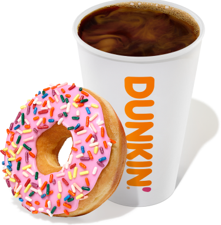
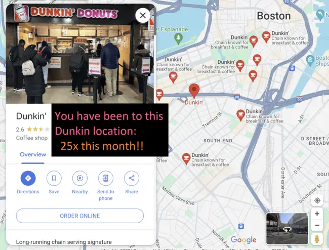

Dunkin Donuts Fanpage!!
Welcome!

Dunkin' is the best coffeeshop in Boston! I love going to Dunkin :)
Dunkin Donuts has the best:
Yum!!
I am a Data Science student and not
affiliated Dunkin
(aside from being a Dunkin fan).
Please do not sue me.
Future Plans for this website :)
-
More unique pages.
-
A navigation bar at the top.
-
Add an embedded interactive map allowing Dunkin fans to find
the nearest open Dunkin Donuts location from anywhere in Boston.
-
Add a query feature enabling Dunkin fans to quickly and
conveniently find the nutrition information of selected Dunkin products.
-
Add a login feature and allow users to
log/compare # of unique Dunkin locations visited.
